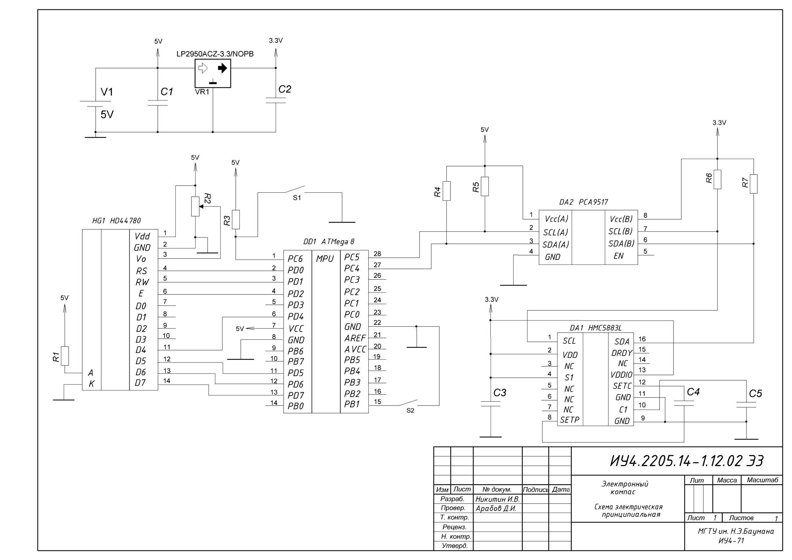
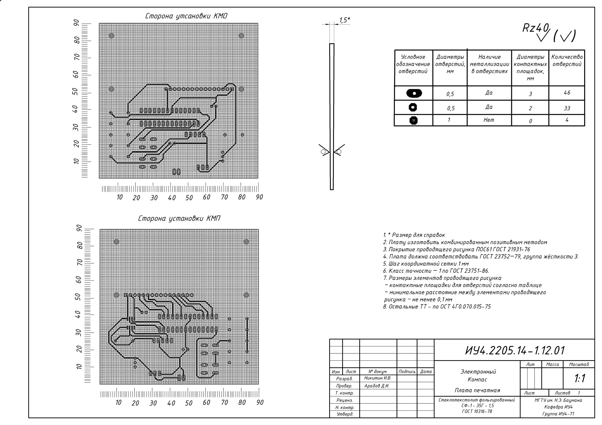
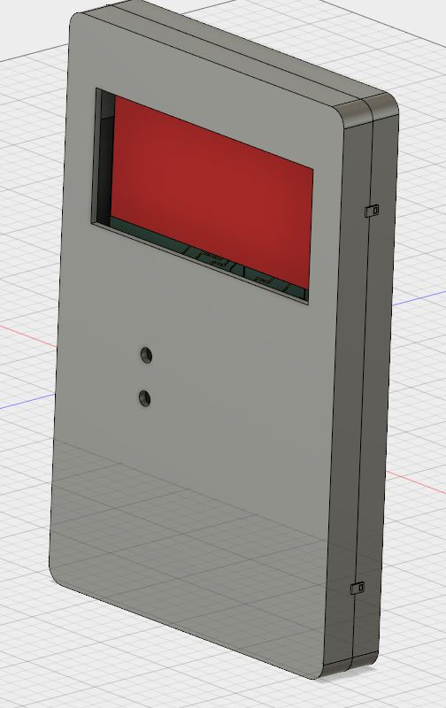
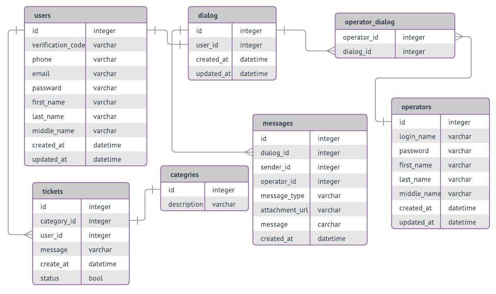
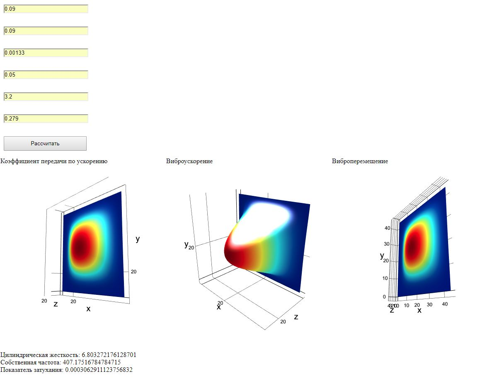
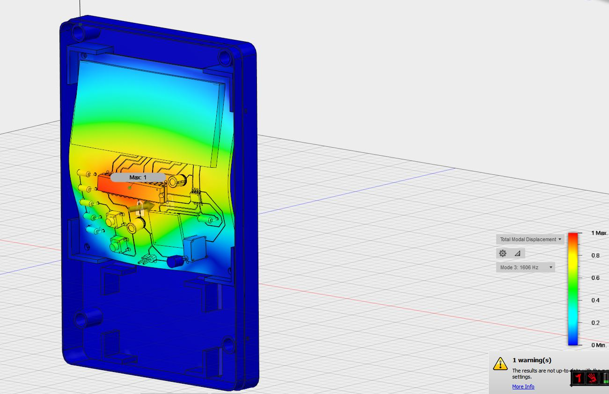
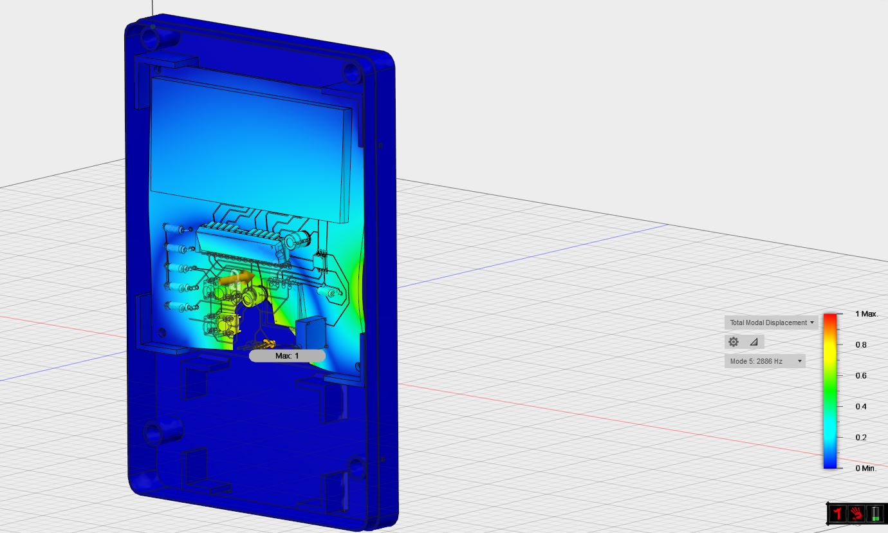
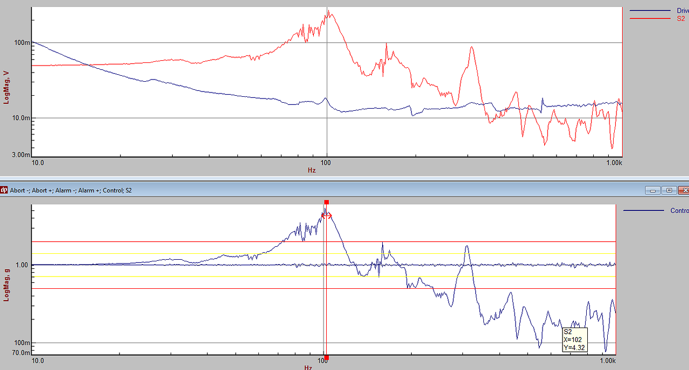

Теоретические основы конструирования и надежности ЭА
Никитин Илья
Техническое задание
Разработать и осуществить сборку электронного компаса, обладающего следующими функциями:
Питание от внутреннего источника
Устройство находится в корпусе кубсата
Присутствует экран, обеспечивающий защиту от радиации
Техническое задание
Условия эксплуатации:
Температура окружающей среды: -14 … +71 0С
Относительная влажность 20%-80% без конденсата.
Уровень вибрации – 3 ДБ, период 3мин. по осям X, Y, Z
Принципиальная схема

Печатная плата

Корпус

Температурный блок
Расчет по Парфенову:
Температура теплоносителя: 71 С
Перегрев корпуса блока в первом приближении: 0.104 С
Перегрев корпуса блока во втором приближении: 31,62 С
Температурный блок
Моделирование в CAE

Механический блок

Механический блок

1606 Гц

2286 Гц
Испытания на стенде (без корпуса)
Испытания на стенде (без корпуса)
Резонансные частоты на дисплее
57,5 Гц
148 Гц
330 Гц
Испытания на стенде (без корпуса)
Резонансные частоты на микросхеме
140 Гц
303 Гц
328 Гц
818 Гц
Испытания на стенде (без корпуса)
Резонансные частоты на плате
253 Гц
705 Гц
950 Гц
1,11 кГц
Испытания на стенде (в корпусе)
Испытания на стенде (в корпусе)
Резонансные частоты на корпусе
57,5 Гц
150 Гц
168 Гц
225 Гц
393 Гц
Испытания на стенде (в корпусе)
Резонансные частоты на дисплее
55 Гц
Испытания на стенде (в корпусе)
Резонансные частоты на плате(внизу)
153 Гц
Испытания на стенде (в корпусе)
Резонансные частоты на плате(сбоку)
103 Гц
160 Гц
Испытания на стенде (в корпусе)

Резонансные частоты на дисплее
102 Гц
Механический блок
Сравнение собственных частот
Частота по Парфенову
Частота по CAE
Частота по испытаниям
407 Гц
1606 Гц
153 Гц
Механический блок
Сравнение собственных частот
Анализ результатов: причинами такого расхождения вижу в следующем:
расчет по Парфенову не учитывает характеристики размещение элементов на плате, также некторые значения являются прибилженными(см коэффициент формы колебания)
расчет в CAE произвидился при некоторых допущениях: магнитометр и дисплей были заменены на параллелипипеды, что повлияло на итоговый расчет
Выводы по механическому блоку
Наличие корпуса улучшает механические характеристики
Считаю, что на результат частоты по расчета является очень приближенным
Выводы по работе:
Соотвествие ТЗ:
Выводы по работе:
При разработке корпуса не учитывал матреиал, из которого он будет изгововлен, в результате в некоторых местах корпус оказался хрупким
Решение: увеличить ширину стенок, в местах крпления сделать небольшую поддержку
Выводы по работе:
Погрешность печати и печать маленьких деталей
Решение: учитывать погрешность и не использовать маленькие детали (~ 1мм)
Выводы по работе:
Проблемы, свзяанные с плохим проектированием корпуса, которые появились после печати
Решение: использовать ребра жесткости для фиксации стыка элементов, уменьшит диаметр закругления
Выводы по работе:
Научился проводить исследования в CAE
Получил прототип, ошибки которого помогут сделать диплом лучше